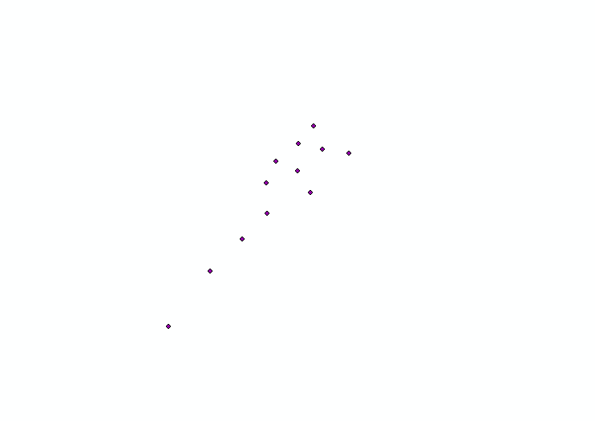
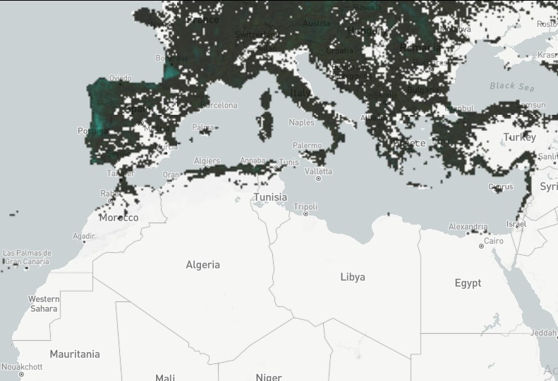

Maps

Données
Les données utilisées pour la réalisation du présent travail sont de sources et formats différents:
-

Shapefile
La surface forêstière brulée
On a pu extraire le shapefile de la surface forestière brulée par région pour chaque année en exploitant les données de Modis burnt areas et les données SIREDD.
-

Shapefile
Le nombre d’incendies par an.
On a pu extraire le shapefile du nombre d’incendies occurrents par an en exploitant les données de Modis burnt areas et les données SIREDD.
-

Shapefile
Les Casernes de pompiers
Il s’agit d’un shapefile comportant les coordonnées des casernes de pompiers au Maroc.
-

Raster
Déforestation
Ces données sont des résultats de l'analyse de times-series d'images Landsat caractérisant l'étendue et le changement des forêts(déforestation) causé par les incendies. Et sont accessibles via le site de Global Forest Change.
-
Ces
données sont
normalisées suivant
la norme ISO 19115
Team
Ce travail est réalisé par:

Projet de Web Mapping 2022